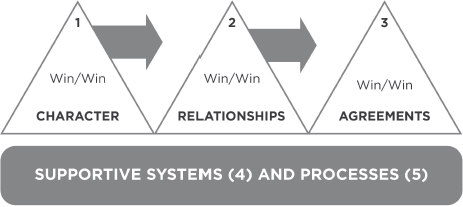
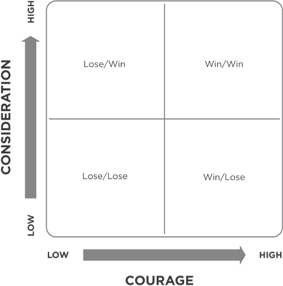

PRINCIPLES OF INTERPERSONAL LEADERSHIP
We have committed the Golden Rule to memory; let us now commit it to life.
EDWIN MARKHAM
One time I was asked to work with a company whose president was very concerned about the lack of cooperation among his people.
“Our basic problem, Stephen, is that they’re selfish,” he said. “They just won’t cooperate. I know if they would cooperate, we could produce so much more. Can you help us develop a human relations program that will solve the problem?”
“Is your problem the people or the paradigm?” I asked.
“Look for yourself,” he replied.
So I did. And I found that there was a real selfishness, an unwillingness to cooperate, a resistance to authority, defensive communication. I could see that overdrawn Emotional Bank Accounts had created a culture of low trust. But I pressed the question.
“Let’s look at it deeper,” I suggested. “Why don’t your people cooperate? What is the reward for not cooperating?”
“There’s no reward for not cooperating,” he assured me. “The rewards are much greater if they do cooperate.”
“Are they?” I asked. Behind a curtain on one wall of this man’s office was a chart. On the chart were a number of racehorses all lined up on a track. Superimposed on the face of each horse was the face of one of his managers. At the end of the track was a beautiful travel poster of Bermuda, an idyllic picture of blue skies and fleecy clouds and a romantic couple walking hand in hand down a white sandy beach.
Once a week, this man would bring all his people into this office and talk cooperation. “Let’s all work together. We’ll all make more money if we do.” Then he would pull the curtain and show them the chart. “Now which of you is going to win the trip to Bermuda?”
It was like telling one flower to grow and watering another, like saying “firings will continue until morale improves.” He wanted cooperation. He wanted his people to work together, to share ideas, to all benefit from the effort. But he was setting them up in competition with each other. One manager’s success meant failure for the other managers.
As with many, many problems between people in business, family, and other relationships, the problem in this company was the result of a flawed paradigm. The president was trying to get the fruits of cooperation from a paradigm of competition. And when it didn’t work, he wanted a technique, a program, a quick fix antidote to make his people cooperate.
But you can’t change the fruit without changing the root. Working on the attitudes and behaviors would have been hacking at the leaves. So we focused instead on producing personal and organizational excellence in an entirely different way by developing information and reward systems which reinforced the value of cooperation.
Whether you are the president of a company or the janitor, the moment you step from independence into interdependence in any capacity, you step into a leadership role. You are in a position of influencing other people. And the habit of effective interpersonal leadership is Think Win/Win.
SIX PARADIGMS OF HUMAN INTERACTION
Win/Win is not a technique; it’s a total philosophy of human interaction. In fact, it is one of six paradigms of interaction. The alternative paradigms are Win/Lose, Lose/Win, Lose/Lose, Win, and Win/Win or No Deal.
• Win/Win
• Win/Lose
• Lose/Win
• Lose/Lose
• Win
• Win/Win or No Deal
Win/Win
Win/Win is a frame of mind and heart that constantly seeks mutual benefit in all human interactions. Win/Win means that agreements or solutions are mutually beneficial, mutually satisfying. With a Win/Win solution, all parties feel good about the decision and feel committed to the action plan. Win/Win sees life as a cooperative, not a competitive arena. Most people tend to think in terms of dichotomies: strong or weak, hardball or softball, win or lose. But that kind of thinking is fundamentally flawed. It’s based on power and position rather than on principle. Win/Win is based on the paradigm that there is plenty for everybody, that one person’s success is not achieved at the expense or exclusion of the success of others.
Win/Win is a belief in the Third Alternative. It’s not your way or my way; it’s a better way, a higher way.
Win/Lose
One alternative to Win/Win is Win/Lose, the paradigm of the race to Bermuda. It says “If I win, you lose.”
In leadership style, Win/Lose is the authoritarian approach: “I get my way; you don’t get yours.” Win/Lose people are prone to use position, power, credentials, possessions, or personality to get their way.
Most people have been deeply scripted in the Win/Lose mentality since birth. First and most important of the powerful forces at work is the family. When one child is compared with another—when patience, understanding or love is given or withdrawn on the basis of such comparisons—people are into Win/Lose thinking. Whenever love is given on a conditional basis, when someone has to earn love, what’s being communicated to them is that they are not intrinsically valuable or lovable. Value does not lie inside them, it lies outside. It’s in comparison with somebody else or against some expectation.
And what happens to a young mind and heart, highly vulnerable, highly dependent upon the support and emotional affirmation of the parents, in the face of conditional love? The child is molded, shaped, and programmed in the Win/Lose mentality.
“If I’m better than my brother, my parents will love me more.”
“My parents don’t love me as much as they love my sister. I must not be as valuable.”
Another powerful scripting agency is the peer group. A child first wants acceptance from his parents and then from his peers, whether they be siblings or friends. And we all know how cruel peers sometimes can be. They often accept or reject totally on the basis of conformity to their expectations and norms, providing additional scripting toward Win/Lose.
The academic world reinforces Win/Lose scripting. The “normal distribution curve” basically says that you got an “A” because someone else got a “C.” It interprets an individual’s value by comparing him or her to everyone else. No recognition is given to intrinsic value; everyone is extrinsically defined.
“Oh, how nice to see you here at our PTA meeting. You ought to be really proud of your daughter, Caroline. She’s in the upper 10 percent.”
“That makes me feel good.”
“But your son, Johnny, is in trouble. He’s in the lower quartile.”
“Really? Oh, that’s terrible! What can we do about it?”
What this kind of comparative information doesn’t tell you is that perhaps Johnny is going on all eight cylinders while Caroline is coasting on four of her eight. But people are not graded against their potential or against the full use of their present capacity. They are graded in relation to other people. And grades are carriers of social value; they open doors of opportunity or they close them. Competition, not cooperation, lies at the core of the educational process. Cooperation, in fact, is usually associated with cheating.
Another powerful programming agent is athletics, particularly for young men in their high school or college years. Often they develop the basic paradigm that life is a big game, a zero sum game where some win and some lose. “Winning” is “beating” in the athletic arena.
Another agent is law. We live in a litigious society. The first thing many people think about when they get into trouble is suing someone, taking them to court, “winning” at someone else’s expense. But defensive minds are neither creative nor cooperative.
Certainly we need law or else society will deteriorate. It provides survival, but it doesn’t create synergy. At best it results in compromise. Law is based on an adversarial concept. The recent trend of encouraging lawyers and law schools to focus on peaceable negotiation, the techniques of Win/Win, and the use of private courts, may not provide the ultimate solution, but it does reflect a growing awareness of the problem.
Certainly there is a place for Win/Lose thinking in truly competitive and low-trust situations. But most of life is not a competition. We don’t have to live each day competing with our spouse, our children, our coworkers, our neighbors, and our friends. “Who’s winning in your marriage?” is a ridiculous question. If both people aren’t winning, both are losing.
Most of life is an interdependent, not an independent, reality. Most results you want depend on cooperation between you and others. And the Win/Lose mentality is dysfunctional to that cooperation.
Lose/Win
Some people are programmed the other way—Lose/Win.
“I lose, you win.”
“Go ahead. Have your way with me.”
“Step on me again. Everyone does.”
“I’m a loser. I’ve always been a loser.”
“I’m a peacemaker. I’ll do anything to keep peace.”
Lose/Win is worse than Win/Lose because it has no standards—no demands, no expectations, no vision. People who think Lose/Win are usually quick to please or appease. They seek strength from popularity or acceptance. They have little courage to express their own feelings and convictions and are easily intimidated by the ego strength of others.
In negotiation, Lose/Win is seen as capitulation—giving in or giving up. In leadership style, it’s permissiveness or indulgence. Lose/Win means being a nice guy, even if “nice guys finish last.”
Win/Lose people love Lose/Win people because they can feed on them. They love their weaknesses—they take advantage of them. Such weaknesses complement their strengths.
But the problem is that Lose/Win people bury a lot of feelings. And unexpressed feelings never die: they’re buried alive and come forth later in uglier ways. Psychosomatic illnesses, particularly of the respiratory, nervous, and circulatory systems, often are the reincarnation of cumulative resentment, deep disappointment and disillusionment repressed by the Lose/Win mentality. Disproportionate rage or anger, overreaction to minor provocation, and cynicism are other embodiments of suppressed emotion.
People who are constantly repressing, not transcending feelings toward a higher meaning find that it affects the quality of their self-esteem and eventually the quality of their relationships with others.
Both Win/Lose and Lose/Win are weak positions, based in personal insecurities. In the short run, Win/Lose will produce more results because it draws on the often considerable strengths and talents of the people at the top. Lose/Win is weak and chaotic from the outset.
Many executives, managers, and parents swing back and forth, as if on a pendulum, from Win/Lose inconsideration to Lose/Win indulgence. When they can’t stand confusion and lack of structure, direction, expectation, and discipline any longer, they swing back to Win/Lose—until guilt undermines their resolve and drives them back to Lose/Win—until anger and frustration drive them back to Win/Lose again.
Lose/Lose
When two Win/Lose people get together—that is, when two determined, stubborn, ego-invested individuals interact—the result will be Lose/Lose. Both will lose. Both will become vindictive and want to “get back” or “get even,” blind to the fact that murder is suicide, that revenge is a two-edged sword.
I know of a divorce in which the husband was directed by the judge to sell the assets and turn over half the proceeds to his ex-wife. In compliance, he sold a car worth over $10,000 for $50 and gave $25 to the wife. When the wife protested, the court clerk checked on the situation and discovered that the husband was proceeding in the same manner systematically through all of the assets.
Some people become so centered on an enemy, so totally obsessed with the behavior of another person that they become blind to everything except their desire for that person to lose, even if it means losing themselves. Lose/Lose is the philosophy of adversarial conflict, the philosophy of war.
Lose/Lose is also the philosophy of the highly dependent person without inner direction who is miserable and thinks everyone else should be, too. “If nobody ever wins, perhaps being a loser isn’t so bad.”
Win
Another common alternative is simply to think Win. People with the Win mentality don’t necessarily want someone else to lose. That’s irrelevant. What matters is that they get what they want.
When there is no sense of contest or competition, Win is probably the most common approach in everyday negotiation. A person with the Win mentality thinks in terms of securing his own ends—and leaving it to others to secure theirs.
Which Option Is Best?
Of these five philosophies discussed so far—Win/Win, Win/Lose, Lose/Win, Lose/Lose, and Win—which is the most effective? The answer is, “It depends.” If you win a football game, that means the other team loses. If you work in a regional office that is miles away from another regional office, and you don’t have any functional relationship between the offices, you may want to compete in a Win/Lose situation to stimulate business. However, you would not want to set up a Win/Lose situation like the “Race to Bermuda” contest within a company or in a situation where you need cooperation among people or groups of people to achieve maximum success.
If you value a relationship and the issue isn’t really that important, you may want to go for Lose/Win in some circumstances to genuinely affirm the other person. “What I want isn’t as important to me as my relationship with you. Let’s do it your way this time.” You might also go for Lose/Win if you feel the expense of time and effort to achieve a win of any kind would violate other higher values. Maybe it just isn’t worth it.
There are circumstances in which you would want to Win, and you wouldn’t be highly concerned with the relationship of that win to others. If your child’s life were in danger, for example, you might be peripherally concerned about other people and circumstances. But saving that life would be supremely important.
The best choice, then, depends on reality. The challenge is to read that reality accurately and not to translate Win/Lose or other scripting into every situation.
Most situations, in fact, are part of an interdependent reality, and then Win/Win is really the only viable alternative of the five.
Win/Lose is not viable because, although I appear to win in a confrontation with you, your feelings, your attitudes toward me and our relationship have been affected. If I am a supplier to your company, for example, and I win on my terms in a particular negotiation, I may get what I want now. But will you come to me again? My short-term Win will really be a long-term Lose if I don’t get your repeat business. So an interdependent Win/Lose is really Lose/Lose in the long run.
If we come up with a Lose/Win, you may appear to get what you want for the moment. But how will that affect my attitude about working with you, about fulfilling the contract? I may not feel as anxious to please you. I may carry battle scars with me into any future negotiations. My attitude about you and your company may be spread as I associate with others in the industry. So we’re into Lose/Lose again. Lose/Lose obviously isn’t viable in any context.
And if I focus on my own Win and don’t even consider your point of view, there’s no basis for any kind of productive relationship.
In the long run, if it isn’t a win for both of us, we both lose. That’s why Win/Win is the only real alternative in interdependent realities.
***
I worked with a client once, the president of a large chain of retail stores, who said, “Stephen, this Win/Win idea sounds good, but it is so idealistic. The tough, realistic business world isn’t like that. There’s Win/Lose everywhere, and if you’re not out there playing the game, you just can’t make it.”
“All right,” I said, “try going for Win/Lose with your customers. Is that realistic?”
“Well, no,” he replied.
“Why not?”
“I’d lose my customers.”
“Then, go for Lose/Win—give the store away. Is that realistic?”
“No. No margin, no mission.”
As we considered the various alternatives, Win/Win appeared to be the only truly realistic approach.
“I guess that’s true with customers,” he admitted, “but not with suppliers.”
“You are the customer of the supplier,” I said. “Why doesn’t the same principle apply?”
“Well, we recently renegotiated our lease agreements with the mall operators and owners,” he said. “We went in with a Win/Win attitude. We were open, reasonable, conciliatory. But they saw that position as being soft and weak, and they took us to the cleaners.”
“Well, why did you go for Lose/Win?” I asked.
“We didn’t. We went for Win/Win.”
“I thought you said they took you to the cleaners.”
“They did.”
“In other words, you lost.”
“And they won.”
“That’s right.”
“So what’s that called?”
When he realized that what he had called Win/Win was really Lose/Win, he was shocked. And as we examined the long-term impact of that Lose/Win, the suppressed feelings, the trampled values, the resentment that seethed under the surface of the relationship, we agreed that it was really a loss for both parties in the end.
If this man had had a real Win/Win attitude, he would have stayed longer in the communication process, listened to the mall owner more, then expressed his point of view with more courage. He would have continued in the Win/Win spirit until a solution was reached they both felt good about. And that solution, that Third Alternative, would have been synergistic—probably something neither of them had thought of on his own.
Win/Win or No Deal
If these individuals had not come up with a synergistic solution—one that was agreeable to both—they could have gone for an even higher expression of Win/Win—Win/Win or No Deal.
No Deal basically means that if we can’t find a solution that would benefit us both, we agree to disagree agreeably—No Deal. No expectations have been created, no performance contracts established. I don’t hire you or we don’t take on a particular assignment together because it’s obvious that our values or our goals are going in opposite directions. It is so much better to realize this up front instead of downstream when expectations have been created and both parties have been disillusioned.
When you have No Deal as an option in your mind, you feel liberated because you have no need to manipulate people, to push your own agenda, to drive for what you want. You can be open. You can really try to understand the deeper issues underlying the positions.
With No Deal as an option, you can honestly say, “I only want to go for Win/Win. I want to win, and I want you to win. I wouldn’t want to get my way and have you not feel good about it, because downstream it would eventually surface and create a withdrawal. On the other hand, I don’t think you would feel good if you got your way and I gave in. So let’s work for a Win/Win. Let’s really hammer it out. And if we can’t find it, then let’s agree that we won’t make a deal at all. It would be better not to deal than to live with a decision that wasn’t right for us both. Then maybe another time we might be able to get together.”
***
Some time after learning the concept of Win/Win or No Deal, the president of a small computer software company shared with me the following experience.
“We had developed new software which we sold on a five-year contract to a particular bank. The bank president was excited about it, but his people weren’t really behind the decision.
“About a month later, that bank changed presidents. The new president came to me and said, ‘I am uncomfortable with these software conversions. I have a mess on my hands. My people are all saying that they can’t go through this and I really feel I just can’t push it at this point in time.’
“My own company was in deep financial trouble. I knew I had every legal right to enforce the contract. But I had become convinced of the value of the principle of Win/Win.
“So I told him ‘We have a contract. Your bank has secured our products and our services to convert you to this program. But we understand that you’re not happy about it. So what we’d like to do is give you back the contract, give you back your deposit, and if you are ever looking for a software solution in the future, come back and see us.’
“I literally walked away from an $84,000 contract. It was close to financial suicide. But I felt that, in the long run, if the principle were true, it would come back and pay dividends.
“Three months later, the new president called me. ‘I’m now going to make changes in my data processing,’ he said, ‘and I want to do business with you.’ He signed a contract for $240,000.”
***
Anything less than Win/Win in an interdependent reality is a poor second best that will have impact in the long-term relationship. The cost of that impact needs to be carefully considered. If you can’t reach a true Win/Win, you’re very often better off to go for No Deal.
Win/Win or No Deal provides tremendous emotional freedom in the family relationship. If family members can’t agree on a video that everyone will enjoy, they can simply decide to do something else—No Deal—rather than having some enjoy the evening at the expense of others.
I have a friend whose family has been involved in singing together for several years. When they were young, she arranged the music, made the costumes, accompanied them on the piano and directed the performances.
As the children grew older, their taste in music began to change and they wanted to have more say in what they performed and what they wore. They became less responsive to direction.
Because she had years of experience in performing herself and felt closer to the needs of the older people at the rest homes where they planned to perform, she didn’t feel that many of the ideas they were suggesting would be appropriate. At the same time, however, she recognized their need to express themselves and to be part of the decision-making process.
So she set up a Win/Win or No Deal. She told them she wanted to arrive at an agreement that everyone felt good about—or they would simply find other ways to enjoy their talents. As a result, everyone felt free to express his or her feelings and ideas as they worked to set up a Win/Win agreement, knowing that whether or not they could agree, there would be no emotional strings.
***
The Win/Win or No Deal approach is most realistic at the beginning of a business relationship or enterprise. In a continuing business relationship, No Deal may not be a viable option, which can create serious problems, especially for family businesses or businesses that are begun initially on the basis of friendship.
In an effort to preserve the relationship, people sometimes go on for years making one compromise after another, thinking Win/Lose or Lose/Win even while talking Win/Win. This creates serious problems for the people and for the business, particularly if the competition operates on Win/Win and synergy.
Without No Deal, many such businesses simply deteriorate and either fail or have to be turned over to professional managers. Experience shows that it is often better in setting up a family business or a business between friends to acknowledge the possibility of No Deal downstream and to establish some kind of buy/sell agreement so that the business can prosper without permanently damaging the relationship.
Of course there are some relationships where No Deal is not viable. I wouldn’t abandon my child or my spouse and go for No Deal (it would be better, if necessary, to go for compromise—a low form of Win/Win). But in many cases, it is possible to go into negotiation with a full Win/Win or No Deal attitude. And the freedom in that attitude is incredible.
FIVE DIMENSIONS OF WIN/WIN
Think Win/Win is the habit of interpersonal leadership. It involves the exercise of each of the unique human endowments—self-awareness, imagination, conscience, and independent will—in our relationships with others. It involves mutual learning, mutual influence, mutual benefits.
It takes great courage as well as consideration to create these mutual benefits, particularly if we’re interacting with others who are deeply scripted in Win/Lose.
That is why this habit involves principles of interpersonal leadership. Effective interpersonal leadership requires the vision, the proactive initiative and the security, guidance, wisdom, and power that come from principle-centered personal leadership.
The principle of Win/Win is fundamental to success in all our interactions, and it embraces five interdependent dimensions of life. It begins with character and moves toward relationships, out of which flow agreements. It is nurtured in an environment where structure and systems are based on Win/Win. And it involves process; we cannot achieve Win/Win ends with Win/Lose or Lose/Win means.
The following diagram shows how these five dimensions relate to each other.

Now let’s consider each of the five dimensions in turn.
Character is the foundation of Win/Win, and everything else builds on that foundation. There are three character traits essential to the Win/Win paradigm.
INTEGRITY. We’ve already defined integrity as the value we place on ourselves. Habits 1, 2, and 3 help us develop and maintain integrity. As we clearly identify our values and proactively organize and execute around those values on a daily basis, we develop self-awareness and independent will by making and keeping meaningful promises and commitments.
There’s no way to go for a Win in our own lives if we don’t even know, in a deep sense, what constitutes a Win—what is, in fact, harmonious with our innermost values. And if we can’t make and keep commitments to ourselves as well as to others, our commitments become meaningless. We know it; others know it. They sense duplicity and become guarded. There’s no foundation of trust and Win/Win becomes an ineffective superficial technique. Integrity is the cornerstone in the foundation.
MATURITY. Maturity is the balance between courage and consideration. I first learned this definition of maturity in the fall of 1955 from a marvelous professor, Hrand Saxenian, who instructed my Control class at the Harvard Business School. He taught the finest, simplest, most practical, yet profound, definition of emotional maturity I’ve ever come across—“the ability to express one’s own feelings and convictions balanced with consideration for the thoughts and feelings of others.” As a part of his doctoral research, Hrand Saxenian had developed this criterion over years of historical and direct field research. He later wrote up his original research format in its completeness with supportive reasoning and application suggestions in a Harvard Business Review article (January-February 1958). Even though it is complementary and also developmental, Hrand’s use of the word “maturity” is different from its use in the 7 Habits “Maturity Continuum,” which focuses on a growth and development process from dependency through independency to interdependency.
If you examine many of the psychological tests used for hiring, promoting, and training purposes, you will find that they are designed to evaluate this kind of maturity. Whether it’s called the ego strength/empathy balance, the self-confidence/respect for others balance, the concern for people/concern for tasks balance, “I’m okay, you’re okay” in transactional analysis language, or 9.1, 1.9, 5.5, 9.9, in management grid language—the quality sought for is the balance of what I call courage and consideration.
Respect for this quality is deeply ingrained in the theory of human interaction, management, and leadership. It is a deep embodiment of the P/PC balance. While courage may focus on getting the golden egg, consideration deals with the long-term welfare of the other stakeholders. The basic task of leadership is to increase the standard of living and the quality of life for all stakeholders.

Many people think in dichotomies, in either/or terms. They think if you’re nice, you’re not tough. But Win/Win is nice… and tough. It’s twice as tough as Win/Lose. To go for Win/Win, you not only have to be nice, you have to be courageous. You not only have to be empathic, you have to be confident. You not only have to be considerate and sensitive, you have to be brave. To do that, to achieve that balance between courage and consideration, is the essence of real maturity and is fundamental to Win/Win.
If I’m high on courage and low on consideration, how will I think? Win/Lose. I’ll be strong and ego bound. I’ll have the courage of my convictions, but I won’t be very considerate of yours.
To compensate for my lack of internal maturity and emotional strength, I might borrow strength from my position and power, or from my credentials, my seniority, my affiliations.
If I’m high on consideration and low on courage, I’ll think Lose/Win. I’ll be so considerate of your convictions and desires that I won’t have the courage to express and actualize my own.
High courage and consideration are both essential to Win/Win. It is the balance that is the mark of real maturity. If I have it, I can listen, I can empathically understand, but I can also courageously confront.
ABUNDANCE MENTALITY. The third character trait essential to Win/Win is the Abundance Mentality, the paradigm that there is plenty out there for everybody.
Most people are deeply scripted in what I call the Scarcity Mentality. They see life as having only so much, as though there were only one pie out there. And if someone were to get a big piece of the pie, it would mean less for everybody else. The Scarcity Mentality is the zero-sum paradigm of life.
People with a Scarcity Mentality have a very difficult time sharing recognition and credit, power or profit—even with those who help in the production. They also have a very hard time being genuinely happy for the successes of other people—even, and sometimes especially, members of their own family or close friends and associates. It’s almost as if something is being taken from them when someone else receives special recognition or windfall gain or has remarkable success or achievement.
Although they might verbally express happiness for others’ success, inwardly they are eating their hearts out. Their sense of worth comes from being compared, and someone else’s success, to some degree, means their failure. Only so many people can be “A” students; only one person can be “number one.” To “win” simply means to “beat.”
Often, people with a Scarcity Mentality harbor secret hopes that others might suffer misfortune—not terrible misfortune, but acceptable misfortune that would keep them “in their place.” They’re always comparing, always competing. They give their energies to possessing things or other people in order to increase their sense of worth.
They want other people to be the way they want them to be. They often want to clone them, and they surround themselves with “yes” people—people who won’t challenge them, people who are weaker than they.
It’s difficult for people with a Scarcity Mentality to be members of a complementary team. They look on differences as signs of insubordination and disloyalty.
The Abundance Mentality, on the other hand, flows out of a deep inner sense of personal worth and security. It is the paradigm that there is plenty out there and enough to spare for everybody. It results in sharing of prestige, of recognition, of profits, of decision making. It opens possibilities, options, alternatives, and creativity.
The Abundance Mentality takes the personal joy, satisfaction, and fulfillment of Habits 1, 2, and 3 and turns it outward, appreciating the uniqueness, the inner direction, the proactive nature of others. It recognizes the unlimited possibilities for positive interactive growth and development, creating new Third Alternatives.
Public Victory does not mean victory over other people. It means success in effective interaction that brings mutually beneficial results to everyone involved. Public Victory means working together, communicating together, making things happen together that even the same people couldn’t make happen by working independently. And Public Victory is an outgrowth of the Abundance Mentality paradigm.
A character rich in integrity, maturity, and the Abundance Mentality has a genuineness that goes far beyond technique, or lack of it, in human interaction.
One thing I have found particularly helpful to Win/Lose people in developing a Win/Win character is to associate with some model or mentor who really thinks Win/Win. When people are deeply scripted in Win/Lose or other philosophies and regularly associate with others who are likewise scripted, they don’t have much opportunity to see and experience the Win/Win philosophy in action. So I recommend reading literature, such as the inspiring biography of Anwar Sadat, In Search of Identity, and seeing movies like Chariots of Fire or plays like Les Misérables that expose you to models of Win/Win.
But remember: If we search deeply enough within ourselves—beyond the scripting, beyond the learned attitudes and behaviors—the real validation of Win/Win, as well as every other correct principle, is in our own lives.
Relationships
From the foundation of character, we build and maintain Win/Win relationships. The trust, the Emotional Bank Account, is the essence of Win/Win. Without trust, the best we can do is compromise; without trust, we lack the credibility for open, mutual learning and communication and real creativity.
But if our Emotional Bank Account is high, credibility is no longer an issue. Enough deposits have been made so that you know and I know that we deeply respect each other. We’re focused on the issues, not on personalities or positions.
Because we trust each other, we’re open. We put our cards on the table. Even though we see things differently, I know that you’re willing to listen with respect while I describe the young woman to you, and you know that I’ll treat your description of the old woman with the same respect. We’re both committed to try to understand each other’s point of view deeply and to work together for the Third Alternative, the synergistic solution, that will be a better answer for both of us.
A relationship where bank accounts are high and both parties are deeply committed to Win/Win is the ideal springboard for tremendous synergy (Habit 6). That relationship neither makes the issues any less real or important, nor eliminates the differences in perspective. But it does eliminate the negative energy normally focused on differences in personality and position and creates a positive, cooperative energy focused on thoroughly understanding the issues and resolving them in a mutually beneficial way.
But what if that kind of relationship isn’t there? What if you have to work out an agreement with someone who hasn’t even heard of Win/Win and is deeply scripted in Win/Lose or some other philosophy?
Dealing with Win/Lose is the real test of Win/Win. Rarely is Win/Win easily achieved in any circumstance. Deep issues and fundamental differences have to be dealt with. But it is much easier when both parties are aware of and committed to it and where there is a high Emotional Bank Account in the relationship.
When you’re dealing with a person who is coming from a paradigm of Win/Lose, the relationship is still the key. The place to focus is on your Circle of Influence. You make deposits into the Emotional Bank Account through genuine courtesy, respect, and appreciation for that person and for the other point of view. You stay longer in the communication process. You listen more, you listen in greater depth. You express yourself with greater courage. You aren’t reactive. You go deeper inside yourself for strength of character to be proactive. You keep hammering it out until the other person begins to realize that you genuinely want the resolution to be a real win for both of you. That very process is a tremendous deposit in the Emotional Bank Account.
And the stronger you are—the more genuine your character, the higher your level of proactivity, the more committed you really are to Win/Win—the more powerful your influence will be with that other person. This is the real test of interpersonal leadership. It goes beyond transactional leadership into transformational leadership, transforming the individuals involved as well as the relationship.
Because Win/Win is a principle people can validate in their own lives, you will be able to bring most people to a realization that they will win more of what they want by going for what you both want. But there will be a few who are so deeply embedded in the Win/Lose mentality that they just won’t think Win/Win. So remember that No Deal is always an option. Or you may occasionally choose to go for the low form of Win/Win—compromise.
It’s important to realize that not all decisions need to be Win/Win, even when the Emotional Bank Account is high. Again, the key is the relationship. If you and I worked together, for example, and you were to come to me and say, “Stephen, I know you won’t like this decision. I don’t have time to explain it to you, let alone get you involved. There’s a good possibility you’ll think it’s wrong. But will you support it?”
If you had a positive Emotional Bank Account with me, of course I’d support it. I’d hope you were right and I was wrong. I’d work to make your decision work.
But if the Emotional Bank Account weren’t there, and if I were reactive, I wouldn’t really support it. I might say I would to your face, but behind your back I wouldn’t be very enthusiastic. I wouldn’t make the investment necessary to make it succeed. “It didn’t work,” I’d say. “So what do you want me to do now?”
If I were overreactive, I might even torpedo your decision and do what I could to make sure others did too. Or I might become “maliciously obedient” and do exactly and only what you tell me to do, accepting no responsibility for results.
During the five years I lived in Great Britain, I saw that country brought twice to its knees because the train conductors were maliciously obedient in following all the rules and procedures written on paper.
An agreement means very little in letter without the character and relationship base to sustain it in spirit. So we need to approach Win/Win from a genuine desire to invest in the relationships that make it possible.
Agreements
From relationships flow the agreements that give definition and direction to Win/Win. They are sometimes called performance agreements or partnership agreements, shifting the paradigm of productive interaction from vertical to horizontal, from hovering supervision to self-supervision, from positioning to being partners in success.
Win/Win agreements cover a wide scope of interdependent interaction. We discussed one important application when we talked about delegation in the “Green and Clean” story in Habit 3. The same five elements we listed there provide the structure for Win/Win agreements between employers and employees, between independent people working together on projects, between groups of people cooperatively focused on a common objective, between companies and suppliers—between any people who need to interact to accomplish. They create an effective way to clarify and manage expectations between people involved in any interdependent endeavor.
In the Win/Win agreement, the following five elements are made very explicit:
Desired results (not methods) identify what is to be done and when.
Guidelines specify the parameters (principles, policies, etc.) within which results are to be accomplished.
Resources identify the human, financial, technical, or organizational support available to help accomplish the results.
Accountability sets up the standards of performance and the time of evaluation.
Consequences specify—good and bad, natural and logical—what does and will happen as a result of the evaluation.
These five elements give Win/Win agreements a life of their own. A clear mutual understanding and agreement up front in these areas creates a standard against which people can measure their own success.
Traditional authoritarian supervision is a Win/Lose paradigm. It’s also the result of an overdrawn Emotional Bank Account. If you don’t have trust or a common vision of desired results, you tend to hover over, check up on, and direct. Trust isn’t there, so you feel as though you have to control people.
But if the trust account is high, what is your method? Get out of their way. As long as you have an up-front Win/Win agreement and they know exactly what is expected, your role is to be a source of help and to receive their accountability reports.
It is much more ennobling to the human spirit to let people judge themselves than to judge them. And in a high trust culture, it’s much more accurate. In many cases people know in their hearts how things are going much better than the records show. Discernment is often far more accurate than either observation or measurement.
Win/Win Management Training
Several years ago, I was indirectly involved in a consulting project with a very large banking institution that had scores of branches. They wanted us to evaluate and improve their management training program, which was supported by an annual budget of $750,000. The program involved selecting college graduates and putting them through twelve two-week assignments in various departments over a six-month period of time so that they could get a general sense of the industry. They spent two weeks in commercial loans, two weeks in industrial loans, two weeks in marketing, two weeks in operations, and so forth. At the end of the six-month period, they were assigned as assistant managers in the various branch banks.
Our assignment was to evaluate the six-month formal training period. As we began, we discovered that the most difficult part of the assignment was to get a clear picture of the desired results. We asked the top executives the key hard question: “What should these people be able to do when they finish the program?” And the answers we got were vague and often contradictory.
The training program dealt with methods, not results; so we suggested that they set up a pilot training program based on a different paradigm called “learner-controlled instruction.” This was a Win/Win agreement that involved identifying specific objectives and criteria that would demonstrate their accomplishment and identifying the guidelines, resources, accountability, and consequences that would result when the objectives were met. The consequences in this case were promotion to assistant manager, where they would receive the on-the-job part of their training, and a significant increase in salary.
We had to really press to get the objectives hammered out. “What is it you want them to understand about accounting? What about marketing? What about real estate loans?” And we went down the list. They finally came up with over one hundred objectives, which we simplified, reduced, and consolidated until we came down to 39 specific behavioral objectives with criteria attached to them.
The trainees were highly motivated by both the opportunity and the increased salary to meet the criteria as soon as possible. There was a big win in it for them, and there was also a big win for the company because they would have assistant branch managers who met results-oriented criteria instead of just showing up for twelve different activity traps.
So we explained the difference between learner-controlled instruction and system-controlled instruction to the trainees. We basically said, “Here are the objectives and the criteria. Here are the resources, including learning from each other. So go to it. As soon as you meet the criteria, you will be promoted to assistant managers.”
They were finished in three-and-a-half weeks. Shifting the training paradigm had released unbelievable motivation and creativity.
As with many paradigm shifts, there was resistance. Almost all of the top executives simply wouldn’t believe it. When they were shown the evidence that the criteria had been met, they basically said, “These trainees don’t have the experience. They lack the seasoning necessary to give them the kind of judgment we want them to have as assistant branch managers.”
In talking with them later, we found that what many of them were really saying was, “We went through goat week; how come these guys don’t have to?” But of course they couldn’t put it that way. “They lack seasoning” was a much more acceptable expression.
In addition, for obvious reasons (including the $750,000 budget for a six-month program), the personnel department was upset.
So we responded, “Fair enough. Let’s develop some more objectives and attach criteria to them. But let’s stay with the paradigm of learner-controlled instruction.” We hammered out eight more objectives with very tough criteria in order to give the executives the assurance that the people were adequately prepared to be assistant branch managers and continue the on-the-job part of the training program. After participating in some of the sessions where these criteria were developed, several of the executives remarked that if the trainees could meet these tough criteria, they would be better prepared than almost any who had gone through the six-month program.
We had prepared the trainees to expect resistance. We took the additional objectives and criteria back to them and said, “Just as we expected, management wants you to accomplish some additional objectives with even tougher criteria than before. They have assured us this time that if you meet these criteria, they will make you assistant managers.”
They went to work in unbelievable ways. They went to the executives in departments such as accounting and basically said, “Sir, I am a member of this new pilot program called learner-controlled instruction, and it is my understanding that you participated in developing the objectives and the criteria.
“I have six criteria to meet in this particular department. I was able to pass three of them off with skills I gained in college; I was able to get another one out of a book; I learned the fifth one from Tom, the fellow you trained last week. I only have one criterion left to meet, and I wonder if you or someone else in the department might be able to spend a few hours with me to show me how.” So they spend half a day in a department instead of two weeks.
These trainees cooperated with each other, brainstormed with each other, and they accomplished the additional objectives in a week and a half. The six-month program was reduced to five weeks, and the results were significantly increased.
This kind of thinking can similarly affect every area of organizational life if people have the courage to explore their paradigms and to concentrate on Win/Win. I am always amazed at the results that happen, both to individuals and to organizations, when responsible, proactive, self-directing individuals are turned loose on a task.
Win/Win Performance Agreements
Creating Win/Win performance agreements requires vital paradigm shifts. The focus is on results, not methods. Most of us tend to supervise methods. We use the gofer delegation discussed in Habit 3, the methods management I used with Sandra when I asked her to take pictures of our son as he was water skiing. But Win/Win agreements focus on results, releasing tremendous individual human potential and creating greater synergy, building PC in the process instead of focusing exclusively on P.
With Win/Win accountability, people evaluate themselves. The traditional evaluation games people play are awkward and emotionally exhausting. In Win/Win, people evaluate themselves, using the criteria that they themselves helped to create up front. And if you set it up correctly, people can do that. With a Win/Win delegation agreement, even a seven-year-old boy can tell for himself how well he’s keeping the yard “green and clean.”
My best experiences in teaching university classes have come when I have created a Win/Win shared understanding of the goal up front. “This is what we’re trying to accomplish. Here are the basic requirements for an A, B, or C grade. My goal is to help every one of you get an A. Now you take what we’ve talked about and analyze it and come up with your own understanding of what you want to accomplish that is unique to you. Then let’s get together and agree on the grade you want and what you plan to do to get it.”
Management philosopher and consultant Peter Drucker recommends the use of a “manager’s letter” to capture the essence of performance agreements between managers and their employees. Following a deep and thorough discussion of expectations, guidelines and resources to make sure they are in harmony with organizational goals, the employee writes a letter to the manager that summarizes the discussion and indicates when the next performance plan or review discussion will take place.
Developing such a Win/Win performance agreement is the central activity of management. With an agreement in place, employees can manage themselves within the framework of that agreement. The manager then can serve like a pace car in a race. He can get things going and then get out of the way. His job from then on is to remove the oil spills.
When a boss becomes the first assistant to each of his subordinates, he can greatly increase his span of control. Entire levels of administration and overhead can be eliminated. Instead of supervising six or eight, such a manager can supervise twenty, thirty, fifty, or more.
In Win/Win performance agreements, consequences become the natural or logical result of performance rather than a reward or punishment arbitrarily handed out by the person in charge.
There are basically four kinds of consequences (rewards and penalties) that management or parents can control—financial, psychic, opportunity, and responsibility. Financial consequences include such things as income, stock options, allowances, or penalties. Psychic or psychological consequences include recognition, approval, respect, credibility, or the loss of them. Unless people are in a survival mode, psychic compensation is often more motivating than financial compensation. Opportunity includes training, development, perks, and other benefits. Responsibility has to do with scope and authority, either of which can be enlarged or diminished. Win/Win agreements specify consequences in one or more of those areas and the people involved know it up front. So you don’t play games. Everything is clear from the beginning.
In addition to these logical, personal consequences, it is also important to clearly identify what the natural organizational consequences are. For example, what will happen if I’m late to work, if I refuse to cooperate with others, if I don’t develop good Win/Win performance agreements with my subordinates, if I don’t hold them accountable for desired results, or if I don’t promote their professional growth and career development?
***
When my daughter turned 16, we set up a Win/Win agreement regarding use of the family car. We agreed that she would obey the laws of the land and that she would keep the car clean and properly maintained. We agreed that she would use the car only for responsible purposes and would serve as a cab driver for her mother and me within reason. And we also agreed that she would do all her other jobs cheerfully without being reminded. These were our wins.
We also agreed that I would provide some resources—the car, gas, and insurance. And we agreed that she would meet weekly with me, usually on Sunday afternoon, to evaluate how she was doing based on our agreement. The consequences were clear. As long as she kept her part of the agreement, she could use the car. If she didn’t keep it, she would lose the privilege until she decided to.
This Win/Win agreement set up clear expectations from the beginning on both our parts. It was a win for her—she got to use the car—and it was certainly a win for Sandra and me. Now she could handle her own transportation needs and even some of ours. We didn’t have to worry about maintaining the car or keeping it clean. And we had a built-in accountability, which meant I didn’t have to hover over her or manage her methods. Her integrity, her conscience, her power of discernment and our high Emotional Bank Account managed her infinitely better. We didn’t have to get emotionally strung out, trying to supervise her every move and coming up with punishments or rewards on the spot if she didn’t do things the way we thought she should. We had a Win/Win agreement, and it liberated us all.
***
Win/Win agreements are tremendously liberating. But as the product of isolated techniques, they won’t hold up. Even if you set them up in the beginning, there is no way to maintain them without personal integrity and a relationship of trust.
A true Win/Win agreement is the product of the paradigm, the character, and the relationships out of which it grows. In that context, it defines and directs the interdependent interaction for which it was created.
Systems
Win/Win can only survive in an organization when the systems support it. If you talk Win/Win but reward Win/Lose, you’ve got a losing program on your hands.
You basically get what you reward. If you want to achieve the goals and reflect the values in your mission statement, then you need to align the reward system with these goals and values. If it isn’t aligned systematically, you won’t be walking your talk. You’ll be in the situation of the manager I mentioned earlier who talked cooperation but practiced competition by creating a “Race to Bermuda” contest.
I worked for several years with a very large real estate organization in the Middle West. My first experience with this organization was at a large sales rally where over 800 sales associates gathered for the annual reward program. It was a psych-up cheerleading session, complete with high school bands and a great deal of frenzied screaming.
Out of the 800 people there, around forty received awards for top performance, such as “Most Sales,” “Greatest Volume,” “Highest Earned Commissions,” and “Most Listings.” There was a lot of hoopla—excitement, cheering, applause—around the presentation of these awards. There was no doubt that those forty people had won; but there was also the underlying awareness that 760 people had lost.
We immediately began educational and organizational development work to align the systems and structures of the organization toward the Win/Win paradigm. We involved people at a grass roots level to develop the kinds of systems that would motivate them. We also encouraged them to cooperate and synergize with each other so that as many as possible could achieve the desired results of their individually tailored performance agreements.
At the next rally one year later, there were over 1,000 sales associates present, and about 800 of them received awards. There were a few individual winners based on comparisons, but the program primarily focused on people achieving self-selected performance objectives and on groups achieving team objectives. There was no need to bring in the high school bands to artificially contrive the fanfare, the cheerleading, and the psych up. There was tremendous natural interest and excitement because people could share in each other’s happiness, and teams of sales associates could experience rewards together, including a vacation trip for the entire office.
The remarkable thing was that almost all of the 800 who received the awards that year had produced as much per person in terms of volume and profit as the previous year’s forty. The spirit of Win/Win had significantly increased the number of golden eggs and had fed the goose as well, releasing enormous human energy and talent. The resulting synergy was astounding to almost everyone involved.
***
Competition has its place in the marketplace or against last year’s performance—perhaps even against another office or individual where there is no particular interdependence, no need to cooperate. But cooperation in the workplace is as important to free enterprise as competition in the marketplace. The spirit of Win/Win cannot survive in an environment of competition and contests.
For Win/Win to work, the systems have to support it. The training system, the planning system, the communication system, the budgeting system, the information system, the compensation system—all have to be based on the principle of Win/Win.
***
I did some consulting for another company that wanted training for their people in human relations. The underlying assumption was that the problem was the people.
The president said, “Go into any store you want and see how they treat you. They’re just order takers. They don’t understand how to get close to the customers. They don’t know the product, and they don’t have the knowledge and the skill in the sales process necessary to create a marriage between the product and the need.”
So I went to the various stores. And he was right. But that still didn’t answer the question in my mind: What caused the attitude?
“Look, we’re on top of the problem,” the president said. “We have department heads out there setting a great example. We’ve told them their job is two-thirds selling and one-third management, and they’re outselling everybody. We just want you to provide some training for the salespeople.”
Those words raised a red flag. “Let’s get some more data,” I said.
He didn’t like that. He “knew” what the problem was, and he wanted to get on with training. But I persisted, and within two days we uncovered the real problem. Because of the job definition and the compensation system, the managers were “creaming.” They’d stand behind the cash register and cream all the business during the slow times. Half the time in retail is slow and the other half is frantic. So the managers would give all the dirty jobs—inventory control, stock work, and cleaning—to the salespeople. And they would stand behind the registers and cream. That’s why the department heads were tops in sales.
So we changed one system—the compensation system—and the problem was corrected overnight. We set up a system whereby the managers only made money when their salespeople made money. We overlapped the needs and goals of the managers with the needs and goals of the salespeople. And the need for human relations training suddenly disappeared. The key was developing a true Win/Win reward system.
***
In another instance, I worked with a manager in a company that required formal performance evaluations. He was frustrated over the evaluation rating he had given a particular manager. “He deserved a three,” he said, “but I had to give him a one” (which meant superior, promotable).
“What did you give him a one for?” I asked.
“He gets the numbers,” was his reply.
“So why do you think he deserves a three?”
“It’s the way he gets them. He neglects people; he runs over them. He’s a troublemaker.”
“It sounds like he’s totally focused on P—on production. And that’s what he’s being rewarded for. But what would happen if you talked with him about the problem, if you helped him understand the importance of PC?”
He said he had done so, with no effect.
“Then what if you set up a Win/Win contract with him where you both agreed that two-thirds of his compensation would come from P—from the numbers—and the other one-third would come from PC—how other people perceive him, what kind of leader, people builder, team builder he is?”
“Now that would get his attention,” he replied.
***
So often the problem is in the system, not in the people. If you put good people in bad systems, you get bad results. You have to water the flowers you want to grow.
As people really learn to think Win/Win, they can set up the systems to create and reinforce it. They can transform unnecessarily competitive situations to cooperative ones and can powerfully impact their effectiveness by building both P and PC.
In business, executives can align their systems to create teams of highly productive people working together to compete against external standards of performance. In education, teachers can set up grading systems based on an individual’s performance in the context of agreed upon criteria and can encourage students to cooperate in productive ways to help each other learn and achieve. In families, parents can shift the focus from competition with each other to cooperation. In activities such as bowling, for example, they can keep a family score and try to beat a previous one. They can set up home responsibilities with Win/Win agreements that eliminate constant nagging and enable parents to do the things only they can do.
A friend once shared with me a cartoon he’d seen of two children talking to each other. “If mommy doesn’t get us up soon,” one was saying, “we’re going to be late for school.” These words brought forcibly to his attention the nature of the problems created when families are not organized on a responsible Win/Win basis.
Win/Win puts the responsibility on the individual for accomplishing specified results within clear guidelines and available resources. It makes a person accountable to perform and evaluate the results and provides consequences as a natural result of performance. And Win/Win systems create the environment which supports and reinforces the Win/Win performance agreements.
Processes
There’s no way to achieve Win/Win ends with Win/Lose or Lose/Win means. You can’t say, “You’re going to think Win/Win, whether you like it or not.” So the question becomes how to arrive at a Win/Win solution.
Roger Fisher and William Ury, two Harvard law professors, have done some outstanding work in what they call the “principled” approach versus the “positional” approach to bargaining in their tremendously useful and insightful book, Getting to Yes. Although the words Win/Win are not used, the spirit and underlying philosophy of the book are in harmony with the Win/Win approach.
They suggest that the essence of principled negotiation is to separate the person from the problem, to focus on interests and not on positions, to invent options for mutual gain, and to insist on objective criteria—some external standard or principle that both parties can buy into.
In my own work with various people and organizations seeking Win/Win solutions, I suggest that they become involved in the following four-step process:
First, see the problem from the other point of view. Really seek to understand and to give expression to the needs and concerns of the other party as well as or better than they can themselves.
Second, identify the key issues and concerns (not positions) involved.
Third, determine what results would constitute a fully acceptable solution.
And fourth, identify possible new options to achieve those results.
Habits 5 and 6 deal directly with two of the elements of this process, and we will go into those in depth in the next two chapters.
But at this juncture, let me point out the highly interrelated nature of the process of Win/Win with the essence of Win/Win itself. You can only achieve Win/Win solutions with Win/Win processes—the end and the means are the same.
Win/Win is not a personality technique. It’s a total paradigm of human interaction. It comes from a character of integrity, maturity, and the Abundance Mentality. It grows out of high-trust relationships. It is embodied in agreements that effectively clarify and manage expectations as well as accomplishment. It thrives in supportive systems. And it is achieved through the process we are now prepared to more fully examine in Habits 5 and 6.
APPLICATION SUGGESTIONS: